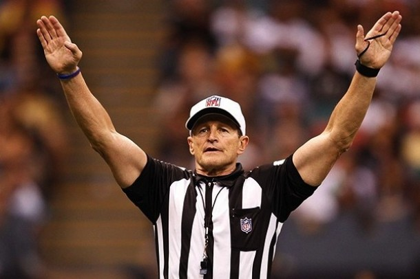

Scoring
| Method |
Points Awarded |
| Touchdown |
6 |
| Extra Point |
1 |
| Saftey |
2 |
| 2 Point Conversion |
2 |

Common Penalties
| Name |
Descritpion |
Penalty |
| Blocking below the waist |
Blocking a player below the waist dangerously |
15 yards |
| Block in the back |
Blocking a player in the back above the waist |
10 yards |
| Chop block |
Blocking a player below the waist while he is being blocked by someone else |
15 yards |
| Clipping |
blocking a player from behind below the waist |
15 yards |
| Delay of game |
Any action that delays the next play |
5 yards |
| Enchroachment |
When the defense corsses the line of scimmage before the snap and makes contact with the offensive |
5 yards |
| Face mask |
Grabbing and oppenent by the facemask |
15 yards (automatic 1st down when against defense) |
| False start |
when the offense moves before the ball is snapped |
5 yards |
| Holding |
When any player holds a non-ballcarrier by the jersey or gear to impede his progress |
10 yards (automatic 1st down when against defense) |
| Pass interference |
when the a player defending a pass impedes the offensive players ability to catch the ball while the ball is in the air |
Spot of foul (automatic 1st down) |
| Illegal contact |
When a defender contacts a reciever past 5 yards down the field before the ball is thrown |
5 yards (automatic 1st down when against defense) |
| Roughing the passer |
Hitting a quarterback high, late, or too low |
15 yards (automatic 1st down) |
| Unnecessary Roughness |
A play or act that a offical deems unnecessary |
15 yards (automatic 1st down when against defense) |
| Unsportsmanlike Conduct |
When a referee deems an act to be unsportsmanlike could be verbal or physical |
15 yards possible ejection (automatic 1st down when against defense) |